Home
> 实验
激光实验
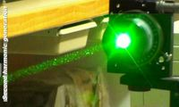
倍频
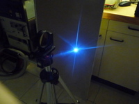
光学击穿
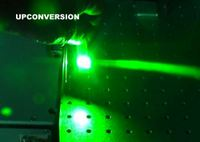
转换
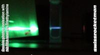
双光子电离
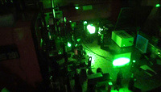
高功率染料激光器
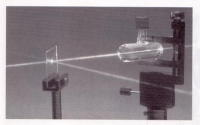
相位共轭镜
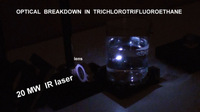
在液体中光击穿
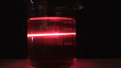
双光子激发
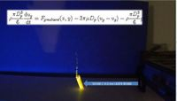
激光液体射流
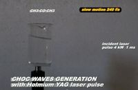
激光冲击波
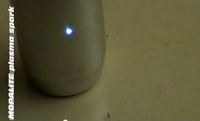
MOPA600激光器激发等离子体
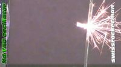
YAG激光钻孔
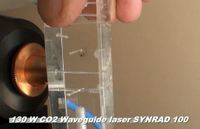
有机玻璃穿孔
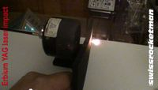
掺铒对YAG激光的影响
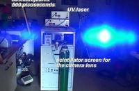
TEA N2激光振荡器放大器
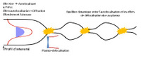
激光诱导成丝
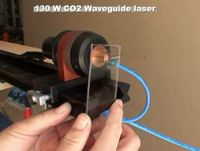
聚碳酸酯切割
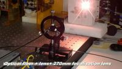
光纤直接耦合半导体激光器切割钢板
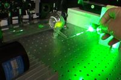
20kW 12ns 绿光脉冲激光器
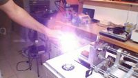
点亮镁
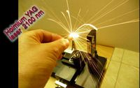
掺钬YAG脉冲激光钻孔
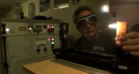
尼龙上的钬
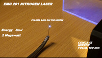
EMG201用氮气光学击穿
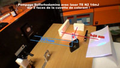
双面泵浦染料激光器
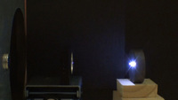
CO2 TEA 激光产生等离子体
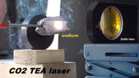
TEA CO2钠等离子体
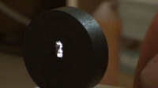
TEA CO2 激光显示
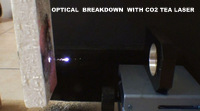
TEA CO2 激光的光击穿
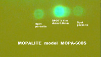
N2激光闪耀
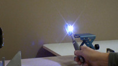
勺子上的等离子体
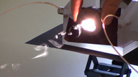
TEA CO2激光测试
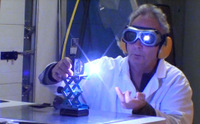
TEA CO2激光测试2
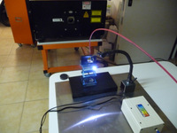
等离子体的温度
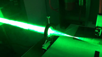
铜蒸气
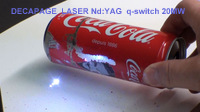
激光剥离
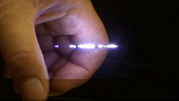
在手中的光击穿
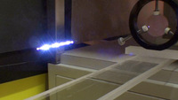
F300mm YAG等离子体
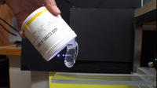
丝状硅油
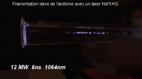
丝状丙酮
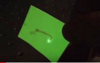
消除磷光
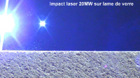
20MW 6ns冲击玻璃
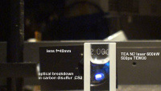
使用TEA N2激光在CS2中进行光击穿
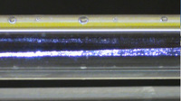
1000 等离子体球
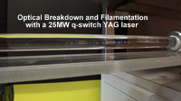
CCl
4
中的光击穿
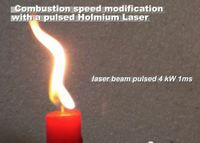
改变蜡烛的燃烧速度
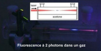
气体中的双光子荧光
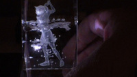
在玻璃里的光击穿
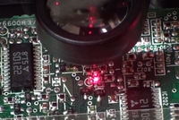
激光二极管钎焊
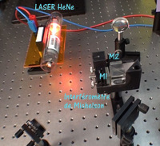
紧凑型迈克尔逊干涉仪
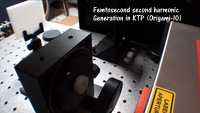
绿色飞秒光束
超连续谱
粉尘衍射
Forked from swissrocketman.fr
qumoptly